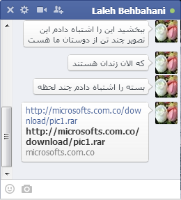

Flying Kitten: From Defacements to Industrial Espionage
Working Notes from "Iran’s Cyber Threat" (12 February 2018)
In January 2018, the Carnegie Endowment for International Peace released "Iran’s Cyber Threat: Espionage, Sabotage, and Revenge," an extensive report that builds off the work documented on this blog (Claudio isn’t responsible for the content in the Carnegie report). In order to support the community, we are publishing our working notes about various incidents and threat actors with the precaution that the documentation haven’t been as rigorously edited or review as other text.
Background
The operations and personnel associated with "Operation Saffron Rose" campaigns documented by FireEye were more extensive than previously disclosed, involving coordination between a wider set of identifiable individuals and targeting different populations over the course of at least a year (as we documented last December). These campaigns posed as popular social networks and other brands, while the actors behind them relied on social engineering through the impersonation of prominent individuals in the diaspora, sexual lures, and compromised accounts of intimate relations in order to spearphish high-profile target.
The intrusion campaigns conducted by "Flying Kitten," the label offered by CrowdStrike, strongly reflected Iranian security policies, targeting the foreign defense industry base, participants in regional conflicts, religious and ethnic minorities, cultural figures, and members of the Iranian government. Rather than purely oriented toward repression of domestic dissent, those targeted during this time range widely from prominent pro-democracy activists inside of Iran to groups advocating violence against the state from the diaspora. In the most extreme alignment between the group and security forces, one protracted intrusion effort included the compromise of corporate infrastructure and administrative personnel employed by a prominent businessman, Babak Zanjani, who was arrested on embezzlement charges within weeks of the successful infiltration. The progression of the Flying Kitten actors from a private defacement group to a nebulous network of actors engaged in the compromise of adversaries to the Islamic Republic provides a window into the intrusion ecosystem and the evolution in tactics that would be seen elsewhere.
Profile
Domain registrations and other records indicate a relationship between components of Flying Kitten’s campaigns and members of a known Iranian defacement group, Ajax Security Team. Ajax’s public activities span from December 2010 until at least December 2013, and describe a small set of participants chiefly engaged in the compromise of sites for vandalistic purposes, as well as the disclosure of simple vulnerabilities in content management software. By November 2011, members of Ajax had followed the trend of other defacement groups into providing commercial information security services, advertising penetration testing, training and email phishing services through a corporate entity, Pars Security (Pars Pardazesh Hafez Shiraz). Additionally, prior to the disclosure of their activities by FireEye, affiliates of the Ajax Security Team had engaged in defacements under other groups and have continued to be active in Persian-language hacking forums.
The Ajax Security Team group does not appear to have been formed for nationalist or pro-Islamic Republic motivations (unlike groups like the "Sun Army"). Early into its existence, members compromised sites based in Iran, including one governmental site connected with the Industries and Mines Organization. A member of the defacement group had even vandalized sites associated with the Basij in 2010 and 2011. However, across time, Ajax took an active role in a number hacktivist campaigns associated with Iranian and pan-Islamic groups, including the "#OpUSA" activities that emulated the Operation Ababil DDoS against American banks. On other occasions, Ajax vandalized Columbia University subdomains and Israeli commercial sites with anti-Israel and anti-American messages. These political involvements also included the defacement of sites critical of the Iranian political and social establishment, such as the June 2012 takedown of a pro-Kurdish, Persian-language news site based in Sweden and an Iran-focused sociology resource, which the group claimed in a blogpost were counterrevolutionary
Discussions on attribution of the members of the Operation Saffron Rose campaigns have centered on the most prominent participants in the Ajax Security Team defacements and specific aliases found in the registration records of infrastructure. The core focus of FireEye’s background, and in subsequent community research, were the alias HUrr!c4nE (previously Bl4ck.k3yv4n) and the name Ali Alipour (Cair3x). The former alias recalls a brief exchange in chat logs between Flying Kitten linked individuals from July 3, 2014, a few weeks after the FireEye report. In resources controlled by the group, made public as a result of operational security lapses, the exposure of additional names and email addresses illustrate the extensiveness of the network beyond these two individuals. The participants commonly infected systems under their control with their own malware agent, providing an indication of their day-to-day activities and an accounting of infrastructure. For example, a virtual server administration interface enumerated several potential parties to the campaign through their hostnames: Mosi (Mojtaba Borhani?), Mohammad, Morteza, Omid, Hooshi and Reza. Similar accounts were found on the infrastructure mirroring these names, such as "omidona" and "hooshi." Participants in the phishing attempts revealed potential personally-identifiable information in their crafting of message templates, as they sent copies of emails to themselves for fine-tuning prior to delivery to the actual target. These names include Reza Feli, Mahnaz Eini and Omid Sadeghi. Based on a consolidation of this information, we find about nine individuals involved in the development and administration of the phishing and malware campaigns.
11:41:39 AM .::::: ArYaIeIrAN :::::.: این خیلی بده - This is so bad.
11:42:00 AM .::::: ArYaIeIrAN :::::.: هوای کیوان هم داشته باشید - You should take care of Keyvan.
11:43:13 AM mb_1986m: داریم نگران نباش - We do, don’t worry.
Resources used in the campaign’s activities and other communications also describe an active role from additional external partners, such as for the procurement of servers and domains. Several internationalized phishing domain names (e.g. xn--facebook-e8k.com) were connected to the group’s Private Layer hosted servers active in March 2014 that were maintained for malware exfiltration and phishing domains. These domains were registered to an organization "ansh" at "content.mimetype@gmail.com," a name that matches several other phishing domains registered under "osshom@yahoo.com" that were used for phishing prior to the June 2013 election. From the chat logs it’s apparent that the content.mimetype address was used by Mojtaba Borhani, as is defender@chmail.ir (a request for comment sent to this address was not returned).
However, these names and email addresses maintain more banal domains that appear to be connected to active businesses, such as cookware company based out of Iran, suggesting that the actors behind them engaged in normal business services concurrent to providing infrastructure for intrusion campaigns.
The overlap between legitimate digital commerce and the provision of infrastructure for intrusion campaigns frequently links malicious activities to real names and companies. One case is the "Aria Data Center" hosting company associated with the alias ArYaIeIrAn (possibly Behrouz Keshvari). While Aria Data Center appears to provide basic hosting services to customers, such as e-commerce sites, ArYaIeIrAn also maintained a LinkedIn profile claiming expertise on "Penetration Testing," and has continued to engage in defacements under the Iranian Digital Security Team and Turk Black Hat. ArYaIeIrAn had actively provided services to Flying Kitten and engaged its participants.
In another case, Mojtaba Borhani (alias, mb_1986, previously covered in our "iKittens: Iranian Actor Resurfaces with Malware for Mac"), connected with both the Flying Kitten and Charming Kitten groups, appears to have accidentally uploaded personal chat logs to the site VirusTotal. In a six-month window of conversations between him and ArYaIeIrAN spanning before and after the publication of Operation Saffron Rose, the two painted a vivid description of their operation and state-aligned hacking ecosystem. In stark contrast to the sprawling operations of Western intelligence agencies, the work was conducted in a small office by only a few individuals, clearly stressed by the struggles common to any startup business. This stress is seemingly compounded by the publication of the report, which disrupted their their operations and led to their team breaking apart.
5:42:04 PM mb_1986m: ببین یه سایته تست نفوذ میخوان به حامد گفتم میگه به بهروز بگو با هم روش کار کنیم - We need a security test on a website. I told Hamed, and you let Behrooz knows. Work on it together
...
5:44:18 PM mb_1986m: http://hdrdc.com/fa (Website title: Research Documentation Center of Sacred Defense- Iran-Iraq war)
…
5:48:40 PM mb_1986m: بهروز اگر بتونید یه دسترسی بگیرید یا یه حرکت کوچیک روش بزنید خیلی خوب میشه - 5:48:50 PM mb_1986m: اون طوری من میتونم کار رو ازشون بگیرم
5:49:00 PM mb_1986m: فقط یه وقت تر نزنید به سایتشونا
Behrooz, listen to me, attack this web site but be careful not to do too much damage. Then I can get this job for us. Do not destroy it.
5:49:17 PM .::::: ArYaIeIrAN :::::.: فقط دیفیس - Ok, only deface
5:49:24 PM mb_1986m: نه نه - no no
5:49:27 PM mb_1986m: دهن سرویس - fuck you man
5:50:08 PM mb_1986m: یه کار نکنی دهنمون و سرویس کنن - Do not make them to go after us.
The two often discussed the difficulties of hiring skilled developers, especially Android and Mac developers, despite decent pay and benefits (2 million tomans, at the time $780 USD, per month, plus housing and insurance). Talented candidates were quickly hired by the Ministry of Intelligence, and those that could be found often appeared to have little experience and came from the defacement community. In other cases, potential recruits were too controversial to their employer. Deferential references were made to an individual called "Hajji," commonly a title taken on by security officials. Similar to the FBI claims regarding the Ababil attackers, Mojtaba appeared able to arrange changes in IRGC service to recruit new members. All the while, the two arranged servers that would later be implicated in espionage attempts against the human rights community in August 2014.
Similarly, a version of Flying Kitten’s malware bundled as an invoice document had exfiltrated data from its victims through FTP to the domain "ultrasms.ir," which is registered to an "Erfan Beigi" with the email address "lvlr98@gmail.com." While Beigi maintained a commercial presence on the ultragig.ir and ultrasms.ir sites offering web design services, this email address was arises in the "Scary Boys Persian Network Security Group" that had engaged in defacements from 2007 to 2011, of which a "lvlr.Erfan" (elsewhere written as "Mr.Erfan") was a primary member. As with the Ajax Security Team’s shift from mere vandalism to espousing a nationalist rhetoric, it is noteworthy that this individual does not appear to be highly connected to Iranian hardline politics. Beigi maintains active social media profiles that focus on drug use and was credited in the defacements of the IRGC Cyber Command’s Gerdab site (March 2010) and a commemorative page for Ayatollah Khomeini (August 2008), amongst other pro-regime sites.
Moreover, one of the Flying Kitten participant’s preferred nameserver providers for its spearphishing domains during this time, FreeDNS.ws, revealed the email address associated with the domain’s account within the Start of Authority (SOA) RNAME resource record. Several of the domains associated with the campaign disclose through their DNS records an account email of "johnjackson252111@gmail.com." This email address was used for the registration for the domains "KheshtakSecurity.com" (originally registered to ArYaIeIrAn) and "LopLopHacker.in." Both served as hacking forums, the latter of which was created five days after the release of FireEye’s report and was connected with a group that took an interest in defacing other Iranian security communities’ sites until it was taken down by a rival. After LopLopHacker.in’s defacement, discussions appeared to have shifted to Facebook group entitled "Stealthy Freedom of Iranian Hackers," a parody of the "My Stealthy Freedom" women’s rights advocacy group. The LopLopHacker page consists of posts on computer security news, in addition to bragging about the compromise of sites, fraudulent activities, and pornographic content, including beastiality. The discrete set of Flying Kitten domains connected through the "johnjackson252111@gmail.com" FreeDNS account was different from the general purpose phishing domains used elsewhere, which may indicate that the group was compartmentalized and that some of the participants have continued on to further engagements.
Activities
Common properties of the registrations of the infrastructure appear to describe a connection between speaphishing activities against dissidents seen in summer 2013 and winter 2014, and political intrusions beginning February 2012, including anti-Israeli defacement campaigns. The registration information of Flying Kitten domain names (such as the phone number +1.3105987339, which appears to have been copied from a California medical site), links the Apple and Facebook domains used within Operation Saffron Rose campaign to other phishing domains registered in early 2012 and used routinely after, including "profiles-facebook.com" and "security-yahoo.com.co." The first domain registered within the set was, "rememberemad.com," the official site of the "Remember Emad" defacement campaign that sought over the course of 2012 to retaliate for the assassination of Imad Mughniyah, a senior member of Hezbollah’s leadership, through the vandalism of Israeli sites and release financial information on Israeli citizens. The registration information also was used alongside the email addresses "robertthompson784@yahoo.com" and "omidexe@yahoo.com" to create the domain "shahinenajafi.com," which appears to be an impersonation domain related to Iranian musician Shahin Najafi. This impersonation site was promoted by at least one fake Google+ profile. Also included was "GetFlash.org," mirroring Flying Kitten’s later use of Adobe’s brand for malware infrastructure, and a Persian-language news site that mostly reposted other content. This history indicates that the tactics observed beginning before June 2013 had been used prior the presidential election and participants had previously engaged in campaigns aligned with the Iranian establishment’s interests.
Across the course of the Flying Kitten’s intrusion campaign, the IP addresses connected with members of the group were disclosed through failures to prevent their inclusion in emails sent to targets and recorded within logs of resources that were used to stage spearphishing messages. For example, when phishing emails were sent from a breach site in July 2013, the script used to stage the messages included the IP address of the sender in the metadata of the email, revealing an address associated with the Hostiran network (5.144.135.38). Hostiran addresses would arise several more times over the length of the campaign, including in further use of breached sites (5.144.135.50) and when connecting to their own servers (5.144.135.51), suggesting that at least one member of the group maintained servers on the commercial web hosting provider for the purpose of their intrusion activities. Moreover, spearphishing messages targeting an international development agency originated from an IP address on Hostiran (5.144.135.50) were sent from an "iran it" using the email address "ir.it@mail.com," which currently maintains two e-commerce sites under a real name.
Other components of the Flying Kitten campaigns were staged from several Iranian IPs within a small prefix of addresses then registered to a "Jahan Pishro" corporation serviced by Datak (81.91.146.233, 81.91.146.236, and 81.91.146.237; all within the 81.91.146.128/25 prefix). This ownership information does not directly imply participation by the network owners, as the actors could have easily leased or compromised systems within the network for malicious purposes without their awareness. Alternatively, the registration information could be out of date or false. Finally, members of the group also appeared to have connected to various resources from consumer Iranian broadband connections, such as on Mabna Telecom, ParsOnline, and Mobinnet.
Campaigns
Until the disruption of the Flying Kitten campaigns as a result of the publication of the Operation Saffron Rose report in May 2014, the actors behind the group maintained a consistent set of tactics: unsophisticated spearphishing and malware activity based on social engineering for the purpose of conducting espionage and surveillance. From an observation of infrastructure used by the actors and other indicators, the campaigns conducted during this time led to at least ninety-one computer compromised by the ‘Stealer’ malware (a dozen of which were likely connected to security researchers) and hundreds more targeted through credential phishing, with dozens of breached social media and email accounts as a result. While the bulk of visible activities entailed masquerading as service providers and international companies in Arabic, English and Persian, on select occasions, Flying Kitten would engage in a more subtle process of pretexting thorough impersonation of others and tailored messaging to gain the target’s trust.

During the lead up to the June 2013 election, Iranians inside of the country and abroad were targeted by operations to access and disrupt communications through phishing, malware and other intrusion efforts. These efforts were broad in scope rather than targeted, with complaints about phishing found on digital communities unrelated to politics and described by Google as targeting "tens of thousands of Iranian users." Clustering credential theft attempts based on domains, registration information, and tactics suggests that multiple discrete actors were involved in attempts to compromise Iranian accounts during this time. While the tactics and techniques used during this time were rudimentary compared to later operations by the group, several of the domains and templates seen prior to the election bear strong linkages to known Flying Kitten resources and were used after May 2014, bridging the tactics and resources as the organization matured and suggesting continue activity by some participants.
One of the earliest observed phishing domains in the lead up to the elections, account-information.net, was registered on March 27, 2013 to "osshom@yahoo.com" posing as the registration process for a private Kerio VPN service. The domain was used again three months later to target a former Voice of America Persian News Network presenter, in a fake notification from Google that their account information had been changed. The message’s originator failed to update information within one message, disclosing other targets of the campaign: a musician in an underground Iranian death metal band and the director of an American national security policy institution. The IP address hosting this domain was also used to conduct malware attempts against targeting reformists abroad.
Over the following months, the same set of actors used several hostnames to impersonate Yahoo!, Facebook and Google notifications in order to obtain account credentials and two-step authentication codes. The originators of the phishing messages leveraged compromised hosts, mostly outdated sites with exploitable Wordpress or Joomla vulnerabilities, in order to send the notifications, in one case using a real estate site for at least eight months to send several hundred messages. The pattern of breaches of vulnerable sites for the purpose of accruing external servers is documented when a system maintained by Reza Feli was compromised over the course of two days by their own malware. These records reinforce the existence of a relationship between the campaigns and the Ajax Security Team, as when one Israeli site was compromised (12heshvan.org), the attacker then operated on the host with a common web shell labelled "ajaxtm.asp."
In contrast to other Iranian actors during the 2013 election, the infrastructure used to collect compromised user data was hosted under direct control of the actors (rather than breached sites). Initially, these sites were located on servers maintained by an Iranian reseller of international hosting, however, after abuse reports led to takedowns, they were moved to Private Layer in fall 2013. This move of domains to the new servers reinforced the linkages between chronologically separate campaigns. Within one small prefix of addresses (at least 141.255.160.245-247) hosting the Google credential phishing site "policy.qooqle.com.co" were multiple other hostnames that would arise in later reports, such as "manage-google.com," "users-facebook.com," "sarvdownload.com," and "ymail.com.co." Also included in the cohosted domains was a typographic version of a U.K.-based, Persian-language news site that we noted in our previous post ("iraniannuk.com").
By October 2013, the Flying Kitten reached a new level of maturity, marked by the first observed use of the Stealer malware described in detail by FireEye, as well as refinements to the social engineering techniques used for pretexting. Moreover, samples and historical documentation maintained by the actors suggest a broadening of the scope of the intrusion attempts beyond political opponents, extending to other national security interests and commercial espionage. Within the first series of intrusions during this time, Flying Kitten had sought to compromise supporters of militant Islamist movements through Arabic language spearphishing posing as pictures of attacks against the Islamic Revolutionary Guard Corps. At the same, activists inside and outside of Iran received an advertisement purporting to be from the U.S. Central Intelligence Agency, offering a tool to report terrorist threats anonymously with reward in return for information. Both of these included attachments that were versions of the Stealer malware. Flying Kitten also created an impersonation email account for a family member of President Rouhani that was used to send malware to Foreign Minister Zarif, more family members of Rouhani, and others in the political establishment, claiming to be project proposals and other documents.
The Stealer malware family developed by members of the group was neither advanced in nature nor appeared to employ exploits in its operation. Early revisions were sensitive to the user’s environment and required the target to have particular versions of the Microsoft .NET Framework installed in order to run properly. This led to failed attacks in its early operation. The Stealer malware had a simple purpose, taking screenshots on a periodic basis, recording keystrokes, retrieving account credentials and, once at the time of installation, reporting system information, such as browser history and remote host credentials. Stealer did not provide common features of other malware, such the capacity to exfiltrate files from the device, provide remote access or record from the microphone. Instead, it appears from the capabilities of the malware and interviews with its victims that Flying Kitten used Stealer as a persistent alternative to credential phishing efforts — collecting user accounts to access the documents and communications stored on those platforms. The agent allowed the group to maintain access to accounts when the user attempted to change passwords and acquire credentials across all sites, a more preferable approach than single phishing for specific services.
Given the lack of sophistication in the Stealer malware, the campaign’s success was primarily reliant on social engineering and operational security failures on the part of the victims. The actors frequently offered resources to the targets or established a personal relationship in the lead up to spearphishing, often posing as women. One such persona, "Sara Khooban," maintained a presence on Google, Facebook and LinkedIn, and lured targets through offering private pictures within sexually-explicit conversations. These personas were frequently repurposed for different roles, and appear to still be used despite otherwise cession of the Flying Kitten. Sara Khooban and another persona, "Solmaz Vaziri" (solmaz007@yahoo.com), approached Iranian diaspora, civil society and artists claiming to have financial resources and proposals to support their projects. Flying Kitten would eventually send Stealer as attachments purporting to bank forms for money transfers and request personal information, such as scanned copies of personal identification. In another case of impersonation, the "osshom@yahoo.com" address noted in the pre-election phishing domain had also registered a domain "daneshjoo-azad.com," which was later connected to addresses used in the Stealer malware (88.150.227.197). This domain appears to have posed as content related to the Islamic Azad University and was potentially used in the compromise a faculty member at the institution or targeted political student organizations.
The infrastructure rented by Flying Kitten was parcelled across campaigns and actors through different virtual servers, maintaining at least one server for exfiltration of user information from malware and another running a dedicated instance of the Zimbra mail client to continuously pull down local backups of the communications compromised through stolen credentials. While the tools and tactics employed within the malware and spearphishing campaigns that targeted Iranian political actors were the same as espionage against foreign private sector, the infrastructure leveraged between the two appeared to differ. The IEEE Aerospace Conference malware attempt documented by FireEye did not appear in the infrastructure used against Iranian civil society, nor do other attempts against non-Iran oriented actors, implying a degree of isolation between campaigns. Much of the espionage documented against foreign companies appeared to have been conducted on a single server hosted on Hetzner (5.9.244.157) over the first months of 2014. Despite of this division of resources, most of the tactics documented by FireEye, such as creating fake Outlook Web Access pages for spearphishing of corporate accounts, are also seen in cases of targeting prominent individuals, such as the spearphishing of a family member of a high-level United States government official.
After FireEye’s publication of Operation Saffron Rose, the most of the resources and campaigns associated with Flying Kitten appeared to cease operations and lapse into expiration, with no further indication of the use of Stealer in its existing form, nor updates from the Pars Pardazesh Hafez Shiraz despite promotion of the company a month before the report. While these actors managed to compromise the sensitive information of hundreds of individuals and gained credentials to several critical websites, none of this information appeared to have been used for defacement, fraud, extortion or other traditional crime. In the case of a development agency compromised by Flying Kitten, it is unclear what the obtained information was used for, as it was not disclosed publicly. The intrusion campaigns were supported by costly infrastructure, so the activities must have provided some degree of income to their perpetrators. Given the alignment of these activities with the priorities of Iranian intelligence agencies and political establishment, this discretion suggests a relationship with the state entities, an arrangement that would be more clear with Rocket Kitten.